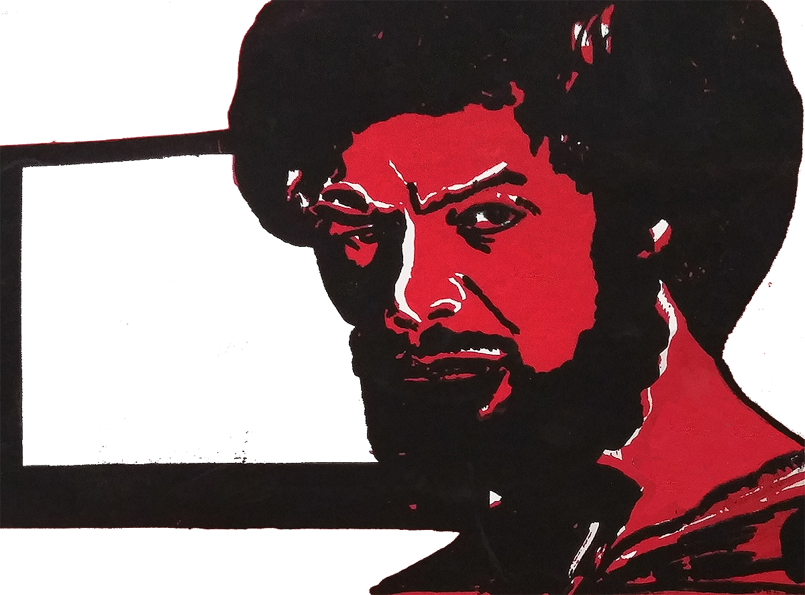
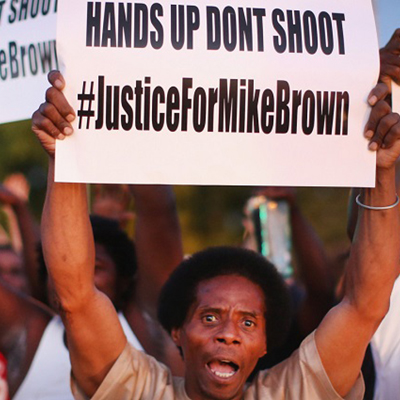
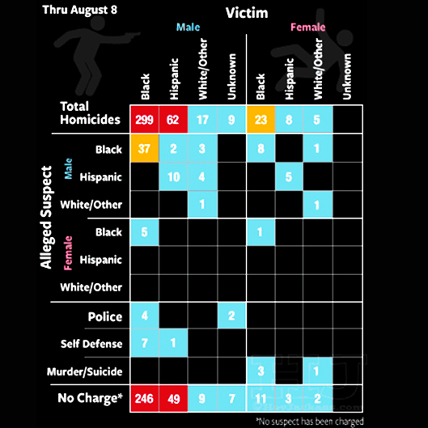
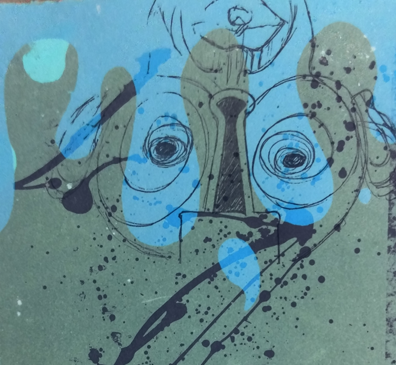
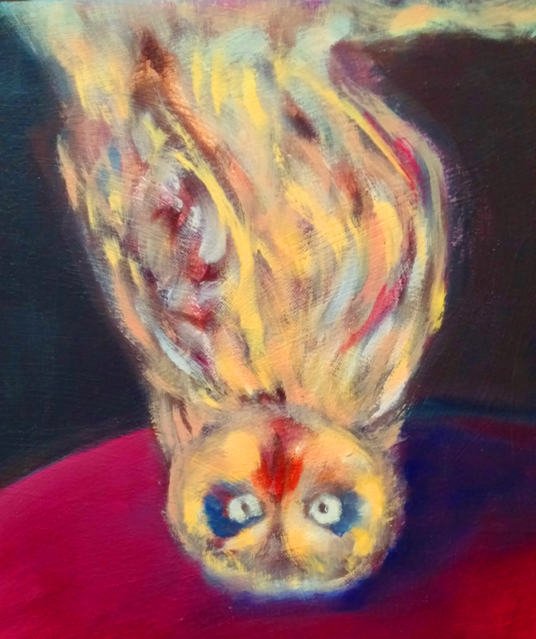
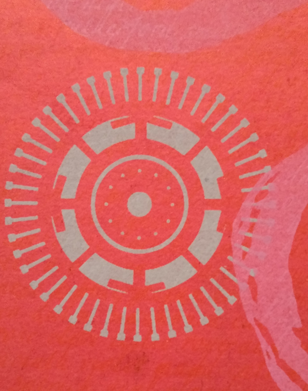
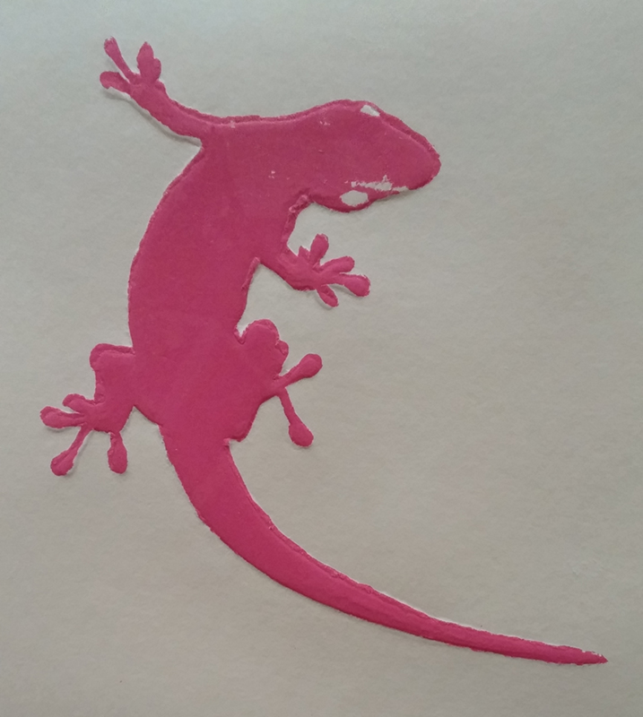
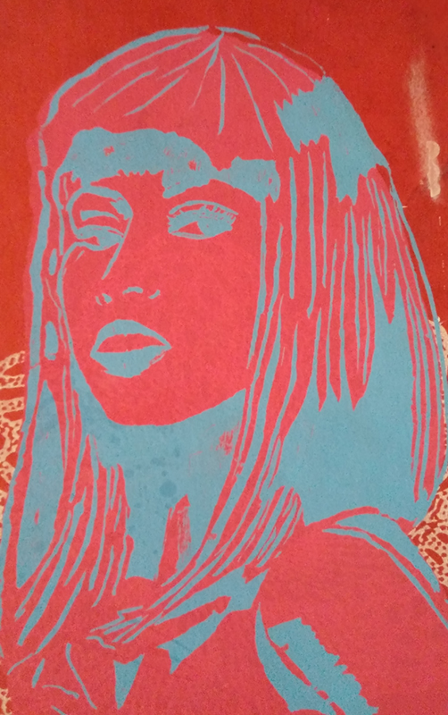
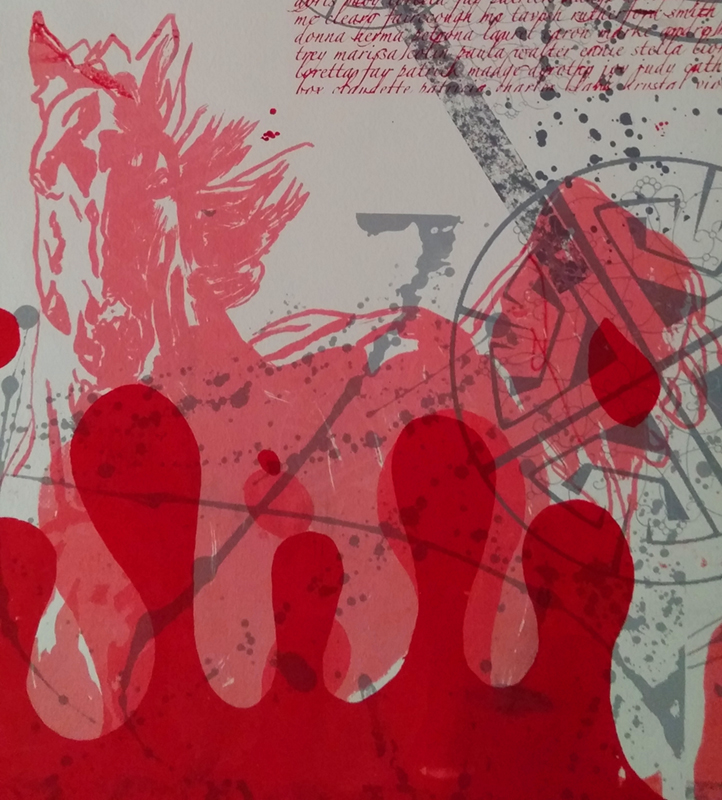
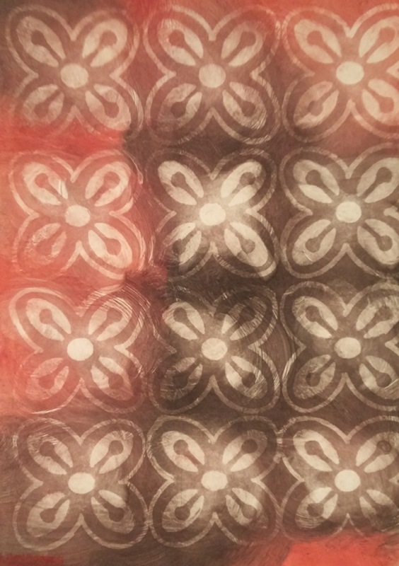

About the UNTELEVISED REVOLuTiON
Specifically the 'Untelevised Revolution" references Gil Scott Heron's audio recording/poem "The Revolution Will Not Be Televised" which was introduced to me by my wise Aunt in the summer of 2011.
My understanding of the purpose of his message was to harken those who were asleep to awake and to those who were unaware to become aware - aware of what was and is still going on in the world.
revolution won't be televised because revolution is not a televised or a schedule event.
Sure media, news outlets and historians can attempt to capture and recapture the traces and events that lead to a revolution but the best way to see what is going on in a revolution is to get involved in one.
the story goes here
the story goes here
the story goes here
the story goes here
the story goes here
Letterpress chambray brunch.
Vice mlkshk crucifix beard chillwave meditation hoodie asymmetrical Helvetica.
Ugh PBR&B kale chips Echo Park.
Gluten-free mumblecore chambray mixtape food truck.




lil' crazy is actually good
concrete lotus

wisdom walk

panopticon watch
youth genocide conspiracy
revolutionary insights

lucky

star power

progressive politics
